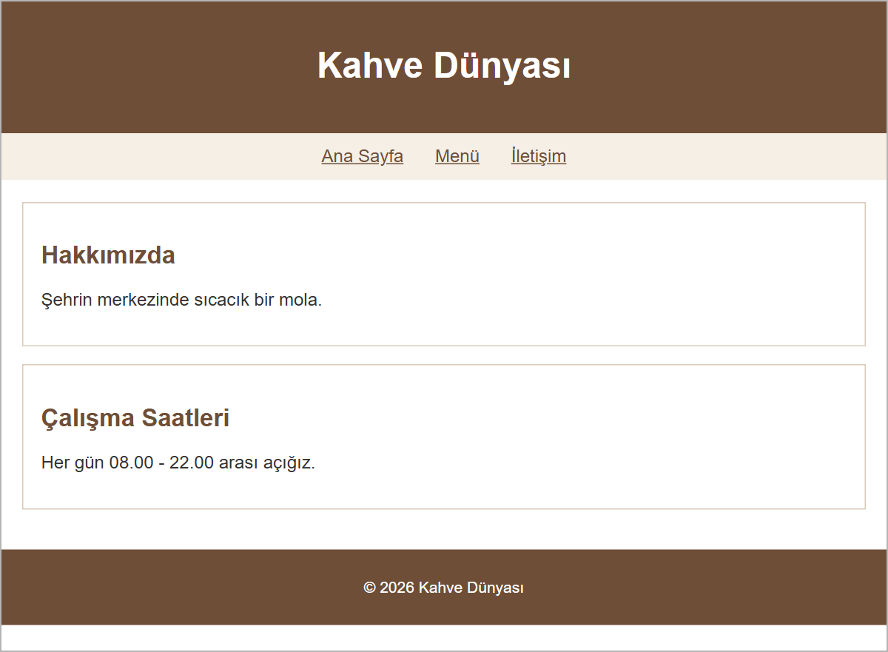
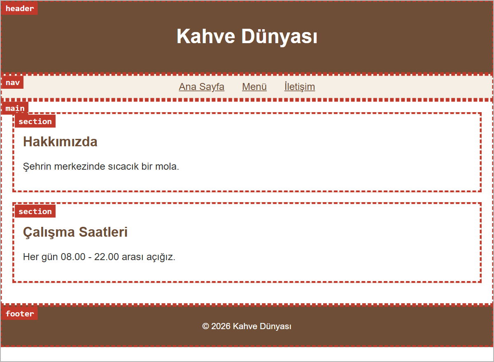
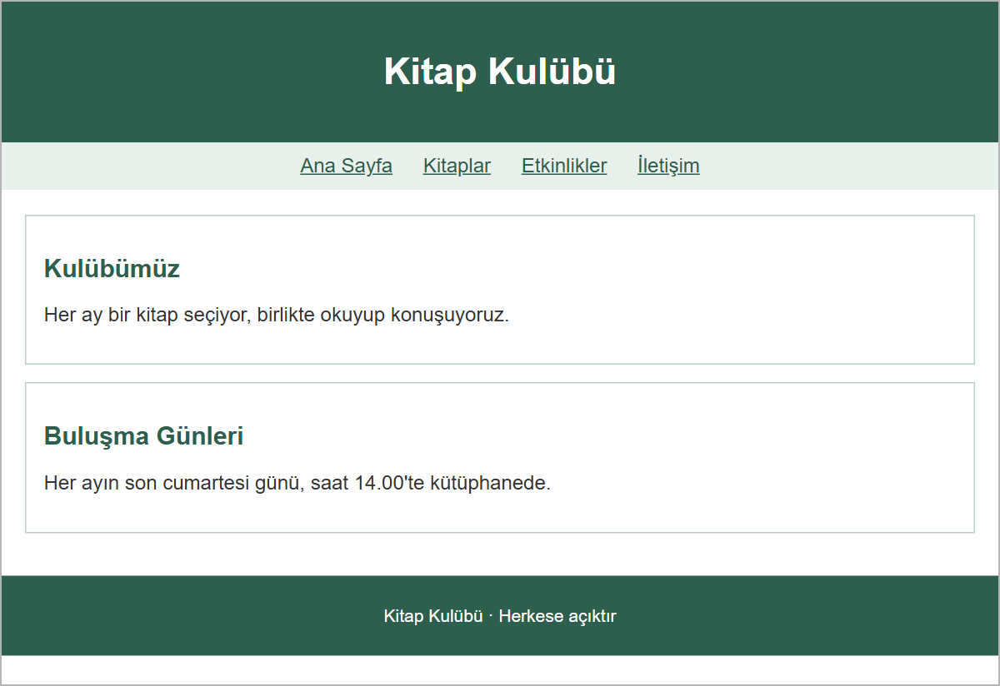

Tasarımdan Koda: Tasarım Okuma ve Semantik Etiketler
Bu sayfada
HEX renk kodları ve font-size 6. haftada, CSS'e Giriş konusunda; padding ve margin ise 7. haftada, CSS Kutu Modeli konusunda işlendi. Bir tasarımı koda dökerken bu bilgiler kullanılır.
1Neden Önce Tasarım?
Bir ev yapılmadan önce mimar evin planını çizer; usta da bu plana bakarak duvarları örer. Web sitelerinde de çoğu zaman aynı düzen vardır: önce bir tasarımcı sayfanın nasıl görüneceğini çizer, sonra bu tasarım kodlanır.
Sektörde tasarım size genellikle bir resim dosyası ya da bir tasarım programındaki dosya olarak gelir. Bu programların yaygın olanlarından biri Figma'dır. Figma'da tasarımı açan kişi her öğenin rengini, yazı boyutunu ve ölçülerini görebilir; yani bu değerler tasarımda hazır bulunur. Sizin işiniz bu ölçüleri okuyup HTML ve CSS'e çevirmektir.
2Tasarımı Okuma
Aşağıda "Kahve Dünyası" için hazırlanmış basit bir tanıtım sayfası tasarımı var:

Tasarımcı bu resmin yanında kısa bir tasarım notu da verir:
| Bölge | Arka plan | Yazı | Boşluk |
|---|---|---|---|
| Üst bölüm | #6f4e37 | Beyaz, ortalı; başlık 32px | İç boşluk 20px |
| Menü | #f5efe6 | Bağlantılar #6f4e37, ortalı | İç boşluk 12px; bağlantıların sağında ve solunda 12px |
| İçerik | Beyaz | Yazı #333333; bölüm başlıkları #6f4e37, 22px | İç boşluk 20px |
| İçerik kutuları | Beyaz, 1px kenarlık #d9cbb8 | İç boşluk 16px; kutular arası 16px | |
| Alt bilgi | #6f4e37 | Beyaz, ortalı, 14px | İç boşluk 12px |
Yazı tipi bütün sayfada Arial.
Tasarım notundaki her bilginin CSS'te bir karşılığı vardır:
| Tasarım notunda | CSS'te |
|---|---|
Renk kodu (#6f4e37) | color (yazı rengi) ya da background-color (arka plan) |
Yazı boyutu (22px) | font-size: 22px; |
| Yazı tipi (Arial) | font-family: Arial, sans-serif; |
| Ortalı yazı | text-align: center; |
| İç boşluk | padding |
| Kutular arası boşluk | margin |
| Kenarlık | border: 1px solid #d9cbb8; |
Renk kodunu tasarım notundan kopyalayıp yapıştırın. #6f4e37 gibi altı basamaklı bir kodu elle yazarken bir harf bile yanlış olursa renk değişir.
3Tasarımı Bölgelere Ayırma
Kod yazmaya başlamadan önce tasarım bölgelere ayrılır. Kâğıtta ya da tahtada tasarımın üzerine kutular çizip her kutuya bir ad verin:
- Üst bölüm: sitenin adı ya da logosu
- Menü: sayfalar arası bağlantılar
- İçerik: sayfanın asıl bilgisi; kendi içinde bölümlere ayrılabilir
- Alt bilgi: sayfanın en altındaki kısa bilgi
Aynı tasarım, bölgeleri ve her bölgenin etiketiyle birlikte şöyle görünür:

4Semantik (Anlamlı) Etiketler
Kart tasarımını 7. haftada, CSS Kutu Modeli konusunda, <div> ile yaptık. <div> işe yarar ama anlam taşımaz: tarayıcıya "bu bir menü" ya da "bu ana içerik" demez. HTML, sayfanın bölgelerini anlamlı biçimde işaretlemek için özel etiketler sunar. Bunlara semantik etiketler denir.
| Etiket | Görevi | Tasarımdaki bölge |
|---|---|---|
<header> | Sayfanın üst kısmı: site adı, logo | Üst bölüm |
<nav> | Menü (sayfalar arası bağlantılar) | Menü |
<main> | Sayfanın ana içeriği; bir sayfada bir kez kullanılır | İçerik |
<section> | İçerikte bir bölüm; genellikle kendi başlığı olur | İçerik kutuları |
<footer> | Alt bilgi (telif, iletişim) | Alt bilgi |
Bu etiketler ekranda <div> gibi görünür; kendiliğinden renk ya da boşluk getirmezler. Ancak arama motorları ve ekran okuyucular (görme engelli kullanıcıların sayfayı sesli dinlemesini sağlayan programlar) sayfanın yapısını bu etiketler sayesinde anlar. Kodu okuyan kişi de hangi bölümün ne olduğunu hemen görür.
<header> ile <head> farklıdır. <head> sayfanın görünmeyen bilgilerini (<title>, <meta>, <style>) tutar; <header> ise <body> içinde, sayfanın görünen üst kısmıdır.
5Örnek: Tasarımın Semantik İskeleti
Şimdi tasarımı koda dökelim. Her bölge kendi semantik etiketiyle yazılır; renk, yazı boyutu ve boşluklar tasarım notundan alınır.
<!DOCTYPE html>
<html lang="tr">
<head>
<meta charset="utf-8">
<title>Kahve Dünyası</title>
<style>
body {
margin: 0;
font-family: Arial, sans-serif;
color: #333333;
}
header {
background-color: #6f4e37;
color: white;
padding: 20px;
text-align: center;
}
h1 { font-size: 32px; }
nav {
background-color: #f5efe6;
padding: 12px;
text-align: center;
}
.menu-baglanti {
color: #6f4e37;
margin: 0 12px;
}
main { padding: 20px; }
section {
border: 1px solid #d9cbb8;
padding: 16px;
margin: 0 0 16px 0;
}
h2 {
color: #6f4e37;
font-size: 22px;
}
footer {
background-color: #6f4e37;
color: white;
padding: 12px;
text-align: center;
font-size: 14px;
}
</style>
</head>
<body>
<header>
<h1>Kahve Dünyası</h1>
</header>
<nav>
<a class="menu-baglanti" href="#">Ana Sayfa</a>
<a class="menu-baglanti" href="#">Menü</a>
<a class="menu-baglanti" href="#">İletişim</a>
</nav>
<main>
<section>
<h2>Hakkımızda</h2>
<p>Şehrin merkezinde sıcacık bir mola.</p>
</section>
<section>
<h2>Çalışma Saatleri</h2>
<p>Her gün 08.00 - 22.00 arası açığız.</p>
</section>
</main>
<footer>
<p>© 2026 Kahve Dünyası</p>
</footer>
</body>
</html>
Bu kod tarayıcıda açıldığında 2. bölümdeki tasarımın aynısı görünür. Birkaç ayrıntı:
body'yemargin: 0verdik; böylece üst bölüm ve alt bilgi sayfanın kenarlarına tam oturur.- Bağlantılar (
<a>) paragraf ya da başlık gibi yeni satıra geçmez, yazının içinde kalır; bu yüzden menü bağlantıları kendiliğinden yan yana dizilir.text-align: centeronları ortalar,margin: 0 12pxaralarına boşluk koyar. sectionkuralındakimargin: 0 0 16px 0yalnızca alta 16px boşluk bırakır (dört değerde sıra: üst, sağ, alt, sol); kutular arasındaki boşluk buradan gelir.- Semantik etiketlerin kendisi görünüm getirmez; bütün renk ve boşlukları CSS verir.
6Sıkça Yapılan 5 Hata
| Hata | Sonuç | Çözüm |
|---|---|---|
Renk kodunu # olmadan yazmak (color: 6f4e37;) | Tarayıcı kuralı yok sayar; yazının rengi değişmez | Kodun başına # koyun: #6f4e37 |
Yazı boyutunu birimsiz yazmak (font-size: 22;) | Tarayıcı kuralı yok sayar; başlık varsayılan boyutta kalır | Birimi yazın: 22px |
<header>'ı <head> içine yazmak | Tarayıcı <header>'ı <body>'ye taşır, sayfa düzgün görünür; ama kod yanlıştır | <header>'ı <body> içine yazın |
| Semantik etiketlerin kendiliğinden biçim getireceğini sanmak | Etiketler <div> gibi görünür; renk ve boşluk gelmez | Görünümü CSS ile verin |
Bir sayfada birden fazla <main> kullanmak | Tarayıcı ikisini de gösterir, uyarı vermez; ama kurala aykırıdır | Tek <main> kullanın; içeriği <section>'larla bölün |
7Bu Haftanın Özeti
- Sektörde sayfa önce tasarlanır, sonra kodlanır; tasarım resim dosyası ya da Figma gibi bir programdaki dosya olarak gelir.
- Tasarım notundaki renk kodu
color/background-color, yazı boyutufont-size, iç boşlukpadding, kutular arası boşlukmarginolarak yazılır. - Kodlamadan önce tasarım bölgelere ayrılır: üst bölüm, menü, içerik, alt bilgi.
- Her bölge semantik etiketle kodlanır:
header,nav,main,section,footer. - Semantik etiketler ekranda
<div>gibi görünür; görünümü CSS verir. Sayfanın yapısını arama motorlarına, ekran okuyuculara ve kodu okuyan kişiye anlatırlar.
8Konu Sonu Testi
-
Sayfanın menü bağlantıları hangi etiketin içine yazılır?
- a)
<header> - b)
<nav> - c)
<footer> - d)
<head>
Cevabı göster
bMenü bağlantıları<nav>içine yazılır. - a)
-
Tasarım notunda "Arka plan
#6f4e37" yazıyor. Bu bilgi CSS'te nasıl yazılır?- a)
color: #6f4e37; - b)
background-color: #6f4e37; - c)
font-size: #6f4e37; - d)
border: #6f4e37;
Cevabı göster
bArka plan rengibackground-colorile verilir. - a)
-
Tasarım notunda bir kutu için "İç boşluk
16px" yazıyor. Hangi kural yazılır?- a)
margin: 16px; - b)
padding: 16px; - c)
font-size: 16px; - d)
width: 16px;
Cevabı göster
bİç boşlukpadding'dir;margindış boşluktur. - a)
-
<header>ile<head>arasındaki fark nedir?- a) İkisi aynıdır
- b)
<header>görünmez,<head>görünür - c)
<head>sayfanın görünmeyen bilgilerini tutar;<header>sayfanın görünen üst kısmıdır - d)
<header>yalnızca<head>içinde kullanılır
Cevabı göster
c<head>görünmeyen bilgileri tutar;<header>ise sayfanın görünen üst kısmıdır. -
Bir
<div>'i<section>ile değiştirirseniz ve CSS'e dokunmazsanız ekranda ne olur?- a) Görünüm değişmez
- b) Bölüm otomatik olarak çerçevelenir
- c) Yazılar kalınlaşır
- d) Sayfa hata verir
Cevabı göster
aSemantik etiketler ekranda<div>gibi görünür; görünümü CSS belirler.
9Kendinizi Deneyin
Cevabınızı önce kendiniz yazın (defterinize ya da VS Code'da bir dosyaya), sonra cevapla karşılaştırın. Kod okuma ve hata bulma sorularında cevabınızı tarayıcıda deneyerek de kontrol edebilirsiniz.
1. (Kavram) Semantik (anlamlı) etiket ne demektir? Sayfa bölgeleri için <div> yerine semantik etiket kullanmanın iki yararını yazın.
Cevabı göster
Semantik etiket, adıyla içindeki bölümün ne olduğunu anlatan etikettir (<header>, <nav>, <footer> gibi). Yararları: (1) Kodu okuyan kişi hangi bölümün ne olduğunu hemen anlar. (2) Ekran okuyucular ve arama motorları sayfanın yapısını doğru tanır.
2. (Kavram) Aşağıdaki sayfa parçalarını uygun semantik etiketle eşleştirin: <header>, <nav>, <main>, <section>, <footer>
- a) Sayfanın asıl içeriği
- b) Site adı ve logonun bulunduğu üst bölüm
- c) Telif yazısının bulunduğu alt bölüm
- d) Menü bağlantıları
- e) Asıl içeriğin içindeki "Duyurular" bölümü
Cevabı göster
a) <main> b) <header> c) <footer> d) <nav> e) <section>
3. (Hata bulma) Aşağıdaki kodda semantik etiketlerle ilgili üç hata var. Bulun ve düzeltin.
<head>
<header><h1>Kitap Kulübü</h1></header>
</head>
<body>
<main>Kitap listesi</main>
<main>Etkinlikler</main>
<div class="alt">© 2026 Kitap Kulübü</div>
</body>
Cevabı göster
<header>görünür bir bölümdür,<head>içine değil<body>içine yazılır.- Bir sayfada yalnızca bir
<main>olur. İki bölüm tek<main>içinde iki<section>olarak yazılmalı. - Alt bölüm için
<div class="alt">yerine<footer>kullanılmalı.
<body>
<header><h1>Kitap Kulübü</h1></header>
<main>
<section>Kitap listesi</section>
<section>Etkinlikler</section>
</main>
<footer>© 2026 Kitap Kulübü</footer>
</body>
4. (Kod yazma) Aşağıdaki tasarım notuna göre üst bölümün CSS'ini yazın.
| Bölge | Özellik | Değer |
|---|---|---|
| Üst bölüm (header) | Arka plan | #2c3e50 |
| Yazı rengi | beyaz | |
| İç boşluk | 20px | |
| Yazı hizası | ortalı | |
| Başlık (h1) | Yazı boyutu | 32px |
Cevabı göster
header {
background-color: #2c3e50;
color: white;
padding: 20px;
text-align: center;
}
header h1 {
font-size: 32px;
}
5. (Kod yazma) Üst bölüm, menü, iki bölümden oluşan asıl içerik ve alt bölümden oluşan bir sayfanın semantik iskeletini (yalnızca <body> içini) yazın. İçerik olarak kısa yazılar yeterlidir.
Cevabı göster
<header>
<h1>Site Adı</h1>
</header>
<nav>
<a href="#">Ana Sayfa</a>
<a href="#">İletişim</a>
</nav>
<main>
<section>
<h2>Hakkımızda</h2>
<p>Kısa tanıtım yazısı.</p>
</section>
<section>
<h2>Duyurular</h2>
<p>Yeni duyuru.</p>
</section>
</main>
<footer>
<p>© 2026 Site Adı</p>
</footer>
10Uygulamalar
Görev: Aşağıdaki tasarım notuna göre, kişisel bir tanıtım sayfasının semantik iskeletini kodlayın. Sayfada üst bölüm, menü, tek bölümlü bir içerik ve alt bilgi olsun.
| Bölge | Arka plan | Yazı | Boşluk |
|---|---|---|---|
| Üst bölüm | #1f3a5f | Beyaz, ortalı | İç boşluk 16px |
| Menü | #dde6f0 | Bağlantılar #1f3a5f, ortalı | İç boşluk 10px; bağlantıların sağında ve solunda 8px |
| İçerik | Beyaz | Bölüm başlığı #1f3a5f | İç boşluk 20px |
| Alt bilgi | #1f3a5f | Beyaz, ortalı, 14px | İç boşluk 10px |
Çözüm:
<!DOCTYPE html>
<html lang="tr">
<head>
<meta charset="utf-8">
<title>Ayşe Yılmaz</title>
<style>
body {
margin: 0;
font-family: Arial, sans-serif;
}
header {
background-color: #1f3a5f;
color: white;
padding: 16px;
text-align: center;
}
nav {
background-color: #dde6f0;
padding: 10px;
text-align: center;
}
.menu-baglanti {
color: #1f3a5f;
margin: 0 8px;
}
main { padding: 20px; }
h2 { color: #1f3a5f; }
footer {
background-color: #1f3a5f;
color: white;
padding: 10px;
text-align: center;
font-size: 14px;
}
</style>
</head>
<body>
<header>
<h1>Ayşe Yılmaz</h1>
</header>
<nav>
<a class="menu-baglanti" href="#">Hakkımda</a>
<a class="menu-baglanti" href="#">Projelerim</a>
<a class="menu-baglanti" href="#">İletişim</a>
</nav>
<main>
<section>
<h2>Hakkımda</h2>
<p>Web tasarımıyla ilgilenen bir öğrenciyim.</p>
</section>
</main>
<footer>
<p>Ayşe Yılmaz</p>
</footer>
</body>
</html>
Adımlar:
web_sitemklasöründe yeni bir.htmldosyası oluşturun.- Yukarıdaki kodu yazıp kaydedin (
Ctrl+S). - Dosyayı tarayıcıda açın. Renkleri ve boşlukları tasarım notuyla karşılaştırın.
11Sınıf Uygulaması
Senaryo: Bir kitap kulübü için hazırlanmış tanıtım sayfası tasarımı size resim olarak verildi. Bu tasarımı semantik etiketlerle kodlayın.

| Bölge | Arka plan | Yazı | Boşluk |
|---|---|---|---|
| Üst bölüm | #2e5e4e | Beyaz, ortalı; başlık 30px | İç boşluk 20px |
| Menü | #e8f0ec | Bağlantılar #2e5e4e, ortalı | İç boşluk 10px; bağlantıların sağında ve solunda 10px |
| İçerik | Beyaz | Yazı #333333; bölüm başlıkları #2e5e4e, 20px | İç boşluk 20px |
| İçerik kutuları | Beyaz, 1px kenarlık #b7cfc4 | İç boşluk 14px; kutular arası 14px | |
| Alt bilgi | #2e5e4e | Beyaz, ortalı, 14px | İç boşluk 10px |
Yazı tipi bütün sayfada Arial.
Yapılacaklar:
- Tasarımı kâğıt üzerinde bölgelere ayırın ve her bölgenin yanına etiketini yazın.
web_sitemklasöründekulup.htmladında yeni bir dosya oluşturun.- İskeleti kurun:
<header>,<nav>,<main>içinde iki<section>,<footer>. - Metinleri tasarımdaki gibi yazın.
- Renkleri, yazı boyutlarını ve boşlukları tasarım notundan alarak CSS'i yazın.
Beklenen sonuç: Tarayıcıdaki sayfa, verilen tasarım resmine benzer görünür ve kodda hiç <div> yoktur.
İpuçları: Önce yalnızca HTML iskeletini yazıp kaydedin, sonra CSS'e geçin. body'ye margin: 0 verin. İç boşluk padding, kutular arası boşluk margin'dir.
12Notlar ve İpuçları
- Tasarımı kodlamaya başlamadan önce bölgelere ayırmak, hangi etiketin nereye yazılacağını baştan belirler; kodu yazarken daha az geri dönersiniz.
- Tasarımdaki bir rengin kodunu bilmiyorsanız tasarım notuna bakın; gözle tahmin edilen renk çoğu zaman tutmaz.
<main>bir sayfada yalnızca bir kez kullanılır. İçeriği bölmek için<section>kullanın.- Hiçbir semantik etiketin uymadığı, yalnızca biçim vermek için kullanılan kutularda
<div>kullanmaya devam edebilirsiniz.
13Çalışma Soruları
- 7. haftada, CSS Kutu Modeli konusunda yaptığınız kart sayfasını (
kart_uygulama.html) semantik etiketlerle yeniden düzenleyin: sayfaya bir<header>ve bir<footer>ekleyip kartı<main>içine alın. - Sık kullandığınız bir web sitesinin ana sayfasını kâğıda çizip bölgelere ayırın; her bölgeye hangi semantik etiketin uyacağını yazın.
Kaynakça
- MDN: Structuring documents (İngilizce)
- MDN: Semantics (İngilizce)
Bu haftanın Sınıf Uygulaması sayfanın sonundadır. Önce konu anlatımını okuyun, sonra uygulamayı kendi bilgisayarınızda yapın.